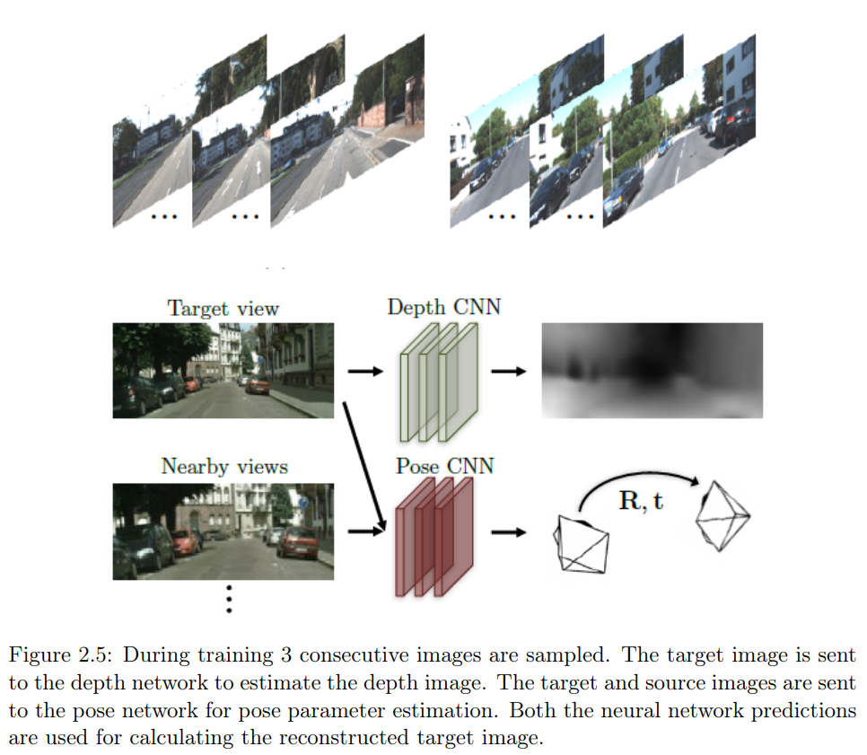

{% extends "index.html" %}
{% block head %}
{{ super() }}
{% endblock %}
{% block line %}
Transformer-based guidance of
Self-Supervised depth estimation

Abstract
This is my master thesis at the UvA about self supervised depth estimation. The thesis was worth 48 EC.
In the thesis we present a novel approach where a transformer model is combined with a
self-supervised depth estimation model. Specifically, self-attention maps from an object
detection transformer model are used for two loss functions. The first loss function tries to
improve the depth estimation for objects further away in the scene. The depth estimation
of these regions is difficult since objects further away from the camera are sparse. With
this loss, we pay extra attention to these sparse objects. The second loss function tries
to improve the depth estimation for transparent/reflective objects as this is a common
difficulty in depth estimation. At last the architecture of a state-of-the-art self-supervised
depth estimation model is updated where a part of the convolutional layers are replaced
with a transformer block. This transformer block has a global receptive field and is
beneficial for dense predictions like depth estimation.
A Github repository is provided with code and instructions at
this link .

{% endblock %}